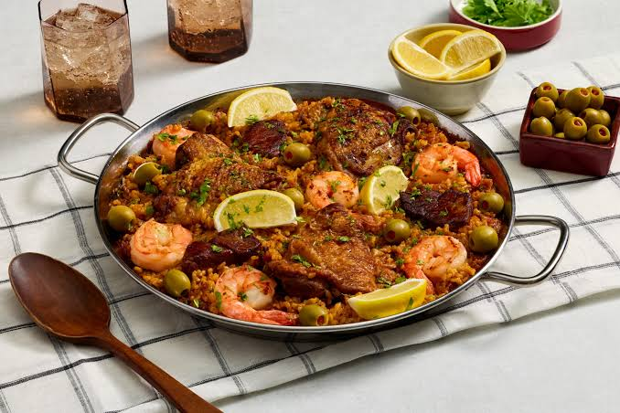

Paella

Ingredients:
- 1 cup of rice
- 4 cups of chicken broth
- 1 cup of saffron threads
- 1 onion, chopped
- 3 cloves of garlic, minced
- 1 red bell pepper, sliced
- 1 green bell pepper, sliced
- 1 tomato, diced
- 1 cup of peas
- 1 cup of artichoke hearts, quartered
- 200g of chicken breast, cubed
- 200g of shrimp, peeled and deveined
- 200g of mussels, cleaned
- Olive oil
- Salt and pepper to taste
Instructions:
- Heat olive oil in a large pan or paella dish over medium heat.
- Add the onion and garlic, and cook until softened.
- Add the bell peppers and tomato, and cook for another minute.
- Add the rice and saffron, and stir to coat the grains.
- Add the chicken broth gradually, stirring constantly.
- Cover and simmer for about 20 minutes or until the rice is cooked.
- In a separate pan, cook the chicken breast until done. Remove and set aside.
- In the same pan, cook the shrimp until pink. Remove and set aside.
- In the same pan, cook the mussels until they open. Remove and set aside.
- Gently fold in the cooked chicken, shrimp, mussels, peas, and artichoke hearts into the paella.
- Sprinkle with salt and pepper to taste.
Back to Home